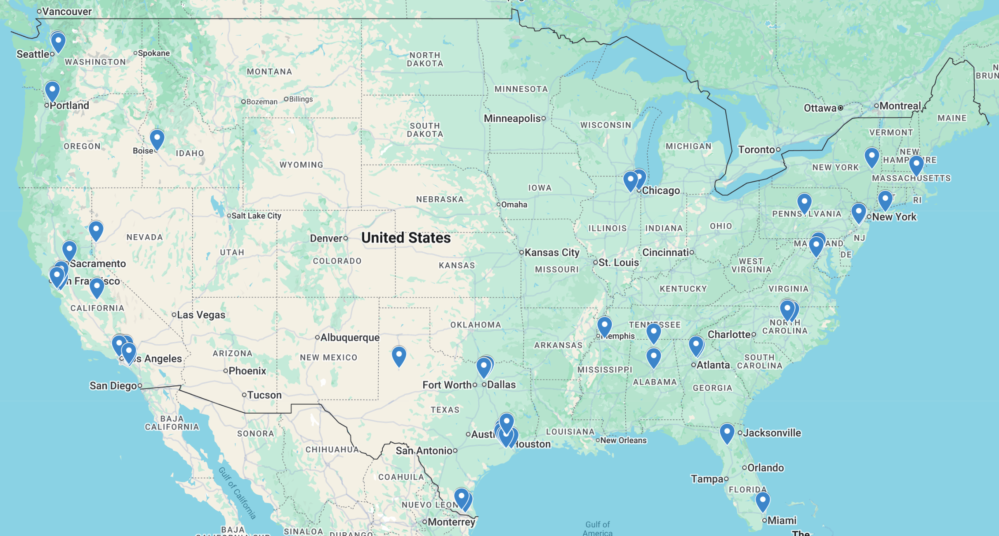

Tournaments / 2026
2026 Invitational
Sunday, January 18, 2026 · Online · Second edition

The second Texas Science Bowl ran online on January 18, 2026. The field grew to 62 teams from 54 schools across 17 states. After 14 rounds, including a repeat round for the final, one team was left.
Champion
Ward Melville High School
- Date
- Sunday, January 18, 2026
- Format
- Online
- Teams
- 62
- Schools
- 54
- Rounds
- 14 (repeat final)
- Prize pool
- $1,200
Credits
President
- Warith Rahman
UT Austin team
- Ravi Adluru
- Taha Asghar-Ali
- Param Bajaj
- Nathaniel Barnett
- Rupak Bhattacharya
- Thai Bui
- Calvin Chiu
- Shreyas Ekanathan
- Kason Gu
- Swayam Gupta
- James Herget
- Aayush Ishware
- Aravind Karthigeyan
- Andrew Kim
- Sasi Kondru
- Aidan Lai
- Sam Lin
- Cameron Luo
- Edward Mei
- Jason Nguyen
- Pratham Patel
- Andy Teng
- Michael Xiang
- Anthony Yang
- Ashley Yang
- Jonathan Yang
- Adam Zhu
External writers and playtesters
- Aldric Benalan
- Nihar Bhave
- Aryan Bora
- Edwin He
- Varyan Jain
- Emily Kaw
- Carolina Kusumanegara
- Gabe Levin
- Benjamin Lin
- Vishal Surya
- Ziang Zhuang
Additional moderators
- Ryan Eto
- Hansen Jin
- Owen Jiang
- Richard Kao
- Mahdi Khan
- Daniel Lu
- Jianyu Wang
- Katherine Wang
- Thomas Wu
- Anthony Xu
- Luyao Yang
- Brian Zhang